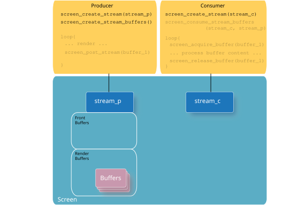
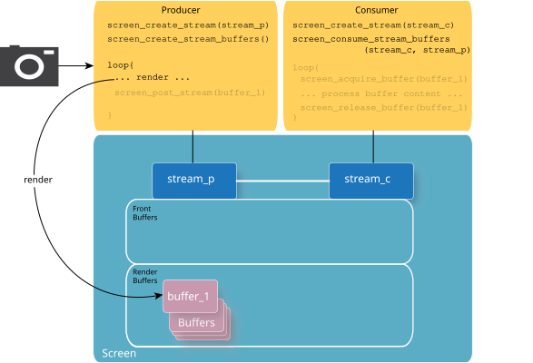
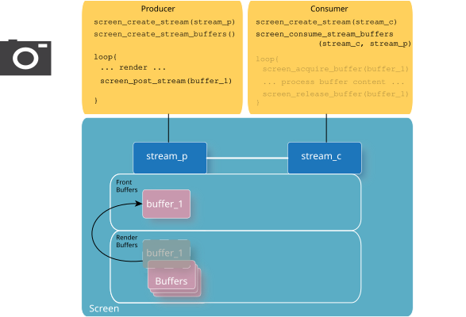
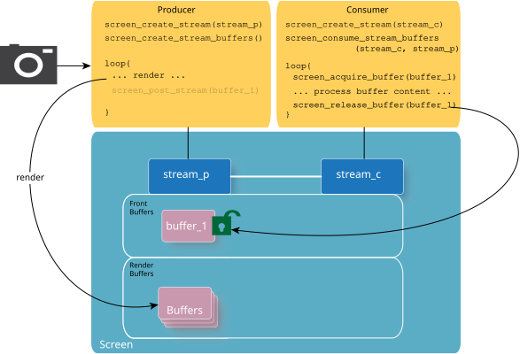
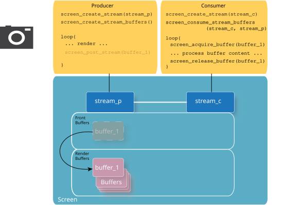

Streams are off-screen, multi-buffered render targets that are provided by the Screen API.
Streams are used by consumers that are applications rather than Screen itself. In the case of windows, it's most common that the consumer is Screen because the content is intended to be shown on a display. However, the content of streams is intended to be consumed by other applications. These applications could be separate, in the same or different process, from the one that's producing the streams' content. A common case for using streams would be displaying output from a camera (or video) that requires some form of image processing on the camera's output before it's displayed.
Buffers of producer streams are created by calling screen_create_stream_buffers(). These buffers are used for either rendering or posting. Initially, all the buffers that are created, are available for rendering. As the buffers are posted, they become front buffers. The front buffers are once again available as render buffers when all consumers have released them. Render buffers are available for producer streams to safely render into. These buffers are retrieved using the SCREEN_PROPERTY_RENDER_BUFFERS property of the stream. Front buffers have been posted by the stream (i.e., screen_post_stream() was called with these buffers). These buffers are retrieved using the SCREEN_PROPERTY_FRONT_BUFFERS property of the stream. Consumers use the front buffers of producer streams when they are consuming content. We don't recommend rendering into any buffer that's not available in SCREEN_PROPERTY_RENDER_BUFFERS because there's a risk that a buffer that's not in this list, is actively being consumed.
Using streams generally implies a basic set of procedures for both the producer and the consumer. Content can be accessed by multiple applications or processes, so it's important that each of the producers and consumers understand how to provide and access the content. The Screen API provides the capability to perform what each of the producer and consumer are responsible for.
A simple description of a set of producer-consumer functions and interactions is illustrated below to provide a basic understanding of how streams are used to share content. The following steps don't include details and specifics; those are provided in later sections.





Other important points on streams to note are:
Streams can't be reconfigured. That is, the following propeties can't be changed once a stream has been realized:
Once a stream has been created and realized, no new buffers can be created on that stream. If you need to change any of the properties listed above, you need to create a new stream and notify the consumers to share this stream instead.
Therefore, if you need to reconfigure your stream, you can do either of the following:
You must destroy the buffers of your existing stream, reconfigure the stream by setting stream properties, and then recreate new stream buffers:
You must destroy the existing stream, then create a new stream with the appropriate properties set.
If the producer locks up, it's usually because of how the consumer is acquiring and releasing buffers. When the consumer acquires buffers, it's essentially keeping those buffers as front buffers, and preventing them from returning to the producer's list of render buffers. The function screen_post_stream() waits until there's a render buffer available to the producer (i.e., at least one buffer indicated by SCREEN_PROPERTY_RENDER_BUFFERS). If the consumer doesn't release the buffers by the time that the producer posts again, then the producer is blocked waiting on the consumer to release buffers back into the producer's list of render buffers.
Screen releases any buffers that have been acquired by a consumer if the consumer terminates unexpectedly. Therefore, the producer won't be blocked indefinitely if one of its consumers crashes.
Streams require that the producer and the consumer be somewhat in synchronization with each other. Generally, there are fewer complications when you have a single producer stream associated with a single consumer stream.